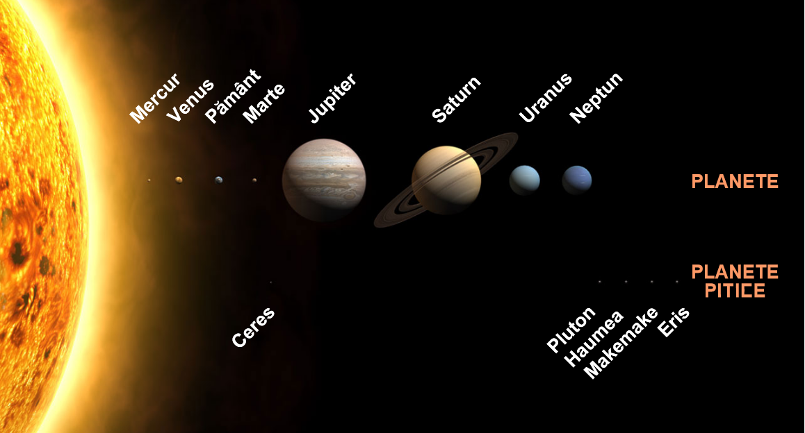

Explorarea spațială este utilizarea astronomiei și a tehnologiei spațiale pentru a explora spațiul exterior. În timp ce studiul spațiului este realizat în principal de astronomi cu telescoape, explorarea sa fizică este realizată atât de sonde spațiale robotizate fără pilot, cât și de zboruri spațiale umane.
În timp ce observarea obiectelor din spațiu, cunoscută sub denumirea de astronomie, este dinainte de istoria documentată, dezvoltarea rachetelor mari și relativ eficiente de la mijlocul secolului XX a permis ca explorarea spațiului fizic să devină o realitate. Motivele obișnuite pentru explorarea spațiului includ promovarea cercetării științifice, prestigiul național, unirea diferitelor națiuni, asigurarea supraviețuirii viitoare a umanității și dezvoltarea avantajelor militare și strategice împotriva altor țări.
Telescopul (din greacă: tele = departe, skopein = a cerceta, a examina) este un instrument care colectează lumina de la un obiect îndepărtat, se concentrează într-un punct (numit focar), și produce o imagine mărită. Deși se indică cu termenul „telescop”, de obicei, telescopul optic, care operează în frecvențele luminii vizibile, există, de asemenea, telescoape sensibile la alte frecvențe ale spectrului electromagnetic.
După principiul de funcționare există două tipuri principale de telescoape optice: reflector și refractor. În telescopul reflector imaginea observată este reflectată de o oglindă intr-un sistem de prisme si apoi la o lentilă ocular, așezată de obicei pe partea laterală a instrumentului. În telescopul refractor se folosește refracția în lentile.
Întrucât luneta astronomică se bazează pe refracția în lentile a luminii este cunoscută și sub numele de telescop refractor (în engleză refracting telescope), sau pur și simplu: refractor, în opoziție cu telescoapele bazate pe reflexia luminii (realizată cu obiective construite din oglinzi parabolice sau sferice), cunoscute și sub numele de telescoape reflectoare (în engleză reflecting telescope).
Nașterea telescopului refractor este de obicei atribuitǎ lui Galileo Galilei, care a arătat prima aplicație în Veneția în 1609. De fapt, primele lentile au fost construite în 1607 de către artizani olandezi care le-au aplicat instrumentelor rudimentare cu putere de rezoluție foarte mică. Proprietățile lentilelor, oricum, erau cunoscute de ceva timp și trebuie să-i fie atribuit lui Galileo meritul de îmbunătățire și prima utilizare astronomică. Deși se pare că primul telescop refractor a fost construit în 1608 de către olandezul Hans Lippershey (circa 1570-1619), alte surse îi atribuie inventarea primului telescop lui Joan Roget, fabricant de ochelari din Girona, Catalonia, care a trăit în jurul anului 1600.
Orbiting Astronomical Observatory 2 a fost primul telescop spațial lansat la 7 decembrie 1968. În februarie 2019 erau descoperite 3.891 exoplanete confirmate. Se estimează că în galaxia noastră, Calea Lactee, se găsesc 100-400 miliarde de stele și peste 100 de miliarde de planete. Există cel puțin 2 trilioane de galaxii în universul observabil. GN-z11 este cel mai îndepărtat obiect cunoscut de Pământ, situat la o distanță de 32 de miliarde de ani-lumină.


Primul obiect artificial care a ajuns pe un alt corp ceresc a fost „Luna 2” care a ajuns pe Lună în 1959. Prima aterizare ușoară pe un alt corp ceresc a fost realizată de Luna 9 care a aterizat pe Lună la 3 februarie 1966. Luna 10 a devenit primul satelit artificial al Lunii, intrând pe orbita Lunii la 3 aprilie 1966. Prima aterizare cu echipaj pe un alt corp ceresc a fost efectuată de Apollo 11 la 20 iulie 1969, aterizând pe Lună. Au existat în total șase nave spațiale cu echipaj care au aterizat pe Lună începând din 1969 până la ultima aterizare umană din 1972.
Primul survol interplanetar a fost în 1961, Venera 1, care a survolat planeta Venus, deși Mariner 2 din 1962 a fost primul survol al lui Venus care a returnat date. Pioneer 6 a fost primul satelit care a orbitat Soarele, lansat la 16 decembrie 1965. Celelalte planete au fost survolate pentru prima dată în 1965 pentru Marte de Mariner 4, în 1973 pentru Jupiter de Pioneer 10, în 1974 pentru Mercur de Mariner 10, în 1979 pentru Saturn de Pioneer 11, în 1986 pentru Uranus de Voyager 2, în 1989 pentru Neptun de Voyager 2. În 2015, planetele pitice Ceres și Pluto au fost orbitate de Dawn și de New Horizons.
Prima misiune interplanetară de suprafață care să returneze date a fost aterizarea sondei Venera 7 din 1970 (Venus). În 1975, Venera 9 a trimis primele imagini de pe suprafața altei planete. În 1971 misiunea Mars 3 a realizat prima aterizare ușoară pe Marte. Ulterior au fost realizate misiuni cu durată mult mai lungă, inclusiv peste șase ani de operare pe suprafața lui Marte de către Viking 1 și peste două ore de transmisie de pe suprafața lui Venus de către Venera 13.